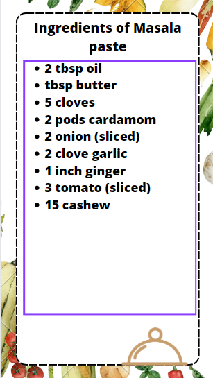

-
How to Make Paneer butter masala
How to make gravy base:
1.Firstly, in a large kadai heat 2 tbsp oil and 2 tbsp butter.
2.Add 5 cloves, 2 pods cardamom and saute on low flame until it turns aromatic.
3.Now add 2 onion, 2 clove garlic, 1 inch ginger.
4.Saute until onions shrink slightly.
5.Further add 3 tomato, 15 cashew and saute for 2 minutes. .
6.cover and boil for 10 minutes, or until tomato softens.
7.cool completely and transfer to the blender and blend to smooth paste.
8.Pass the curry to the filter to get rid of seeds and skin.
9.Smooth and silky, the tomato-onion paste is ready. keep aside.
How to make paneer butter masala
1.Firstly, in a large kadai heat 2 tbsp oil, 2 tbsp butter, 1 bay leaf and 1 chilli. saute until the spices turn aromatic. now add 1 onion and saute until onions turn and golden brown.
2.Keeping the flame on low, add ½ tsp turmeric, 1 tsp chilli powder, ¾ tsp coriander powder, ¼ tsp cumin powder, ½ garam masala and 1 tsp salt. saute until the spices turn aromatic. make sure not to burn the spices.
3.Add in prepared onion tomato paste and mix well. cook until the oil separates from the masala paste. now add 1 cup water and mix well adjusting the consistency.
4.Further, add in 2 tbsp cream and mix well. also, add 16 cubes of paneer and mix gently.
5.simmer for 5 minutes, or until the paneer absorbs the flavour. add 1 tsp kasuri methi and 2 tbsp coriander. mix well.
finally, enjoy paneer butter masala with roti or naan.6.Finally, enjoy paneer butter masala with roti or naan.